Film Basics
Films, or movies, tell stories in much the same way as short stories or novels do. Some films might also be compared to poems, full of imagery that appeals to the senses. Films use many of the same techniques as photographs, but add sound and motion. In Unit 1 you were introduced to how to analyze a photograph. Much of the same suggestions can be used to examine the techniques used in films. In addition, the following are some terms you can use to talk about specific moments or scenes in a film.
Shot
All the action recorded in one run of the camera, without interruption or change in point of view. In a car chase, one shot might show the driver's face through the windshield.
Cut
The end of a shot; the change from one shot to another, which may be sudden, or more gradual as in a fade or dissolve.
Scene
A series of shots all related to one part of an event. In a car chase, one scene might be the part of a car chase that takes place on one street.
Mise-en-scene refers to the way in which all of the visual elements are arranged in each frame. This includes the setting or surroundings of an event. The arrangement or display of the scenery, backdrop, and/or landscape is often referred to as sets.

Iris In/Out
A new image appears as an expanding circle (in). An old image goes away as a shrinking circle (out)
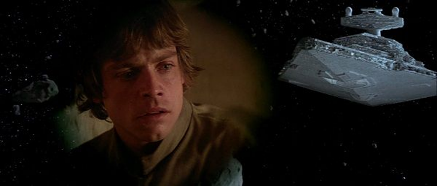
Dissolve
A dissolve overlaps two shots for the majority of the effect, usually at the end of one scene and the beginning of the next, but may be used in montage sequences also. Generally, but not all the time, the use of a dissolve is held to indicate that a period of time has passed between the two scenes. Also, it may indicate the change of location or show the character's thoughts such as flashback of their personal reflections.
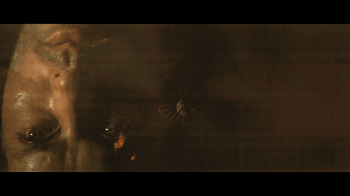
Sequence
A series of scenes all related to one topic or event, with a clear beginning and ending (cut). For example, many action films have a car-chase sequence. The narrative and sequences of events that make up the story in a film are referred to as the plot.
Lighting
Creates significant emotional responses from the audience based on what people associate with light and darkness. It compares to how a writer would establish tone and mood in their work. It effects clarity, realism, and emotion.
this link opens in a new window/tab)
Types of Lighting
Natural: warm glow, emphasizes reality, usually the sunlight
Artificial: sets a scene, has lighting that exists outside of nature, emphasizes something in particular

Bright: reveals vivid or intense details, cheerful, happy

Soft: can show tenderness
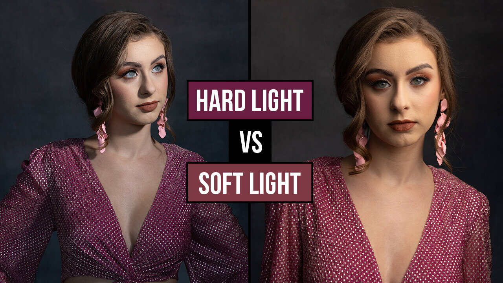
Top: showcases or highlights the object or subject like they are on stage or under a spotlight; all eyes are on the subject

Back: emphasizes the shape or silhouette rather than the individual person or thing.

Side: can show a character who feels divided or torn between two choices
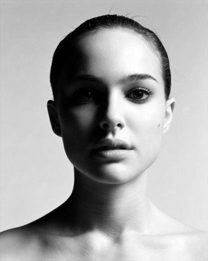
Under: can be spooky; can make the subject appear dangerous or evil

Sound
Sound can be heard (diegetic) or not heard (non-diegetic) by characters. It compares to how a writer establishes tone and mood in their work. Diegetic sound can logically be heard by the characters as dialogue, background noise, and sound of things in the scene. Non-Diegetic sound cannot be heard by the characters but is designed for the audience reaction only, such as ominous music or sounds.
The music in a film can set the mood for the scene. The soundtrack refers to the popular music embedded within the film. Special effects are created by using technology to bring sound into the film.
(this link opens in a new window/tab)(this link opens in a new window/tab)
Although making a film requires the collaboration of many individuals, the person who has the most authority is the director. It is the director who has the overall artistic vision of the film.
The director controls what we see:
- composition - mise-en-scene
- camera distance - long, medium, close-up shots
- camera movement - pan, tilt, tracking
- Camera angles - high, low, eye-level
- Colour and lighting
- Editing - cut, fade in/fade out, dissolve
and what we hear: (diegetic and non-diegetic)
- music
- dialogue
- sound effects
Shot Composition
The composition of a shot is the placement of the elements in the frame in relation to each other.

The following video introduces you to the concepts of Framing, Leading Lines, Rack Focusing, and Lead Room, as well as the Rule of Thirds to create a specific effect.
(this link opens in a new window/tab)
Point of Focus
Point of focus has to do with the composition but isn’t the composition. The composition of a frame should point the viewer in the direction they should look. Like the shot below, the light fixtures and the pillars are “leading lines” of the composition that direct you to the center of the frame, which is the point of focus.

Internal Framing
A frame within the frame of a visual, typically a window or a door. Limits the point of focus, symbolizing entrapment or isolation.

Open/Negative Space
The point of focus is surrounded by space that is intentionally empty. It states or suggest that the person in the point of focus is vulnerable/isolated.
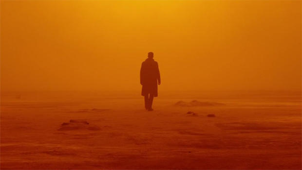
Rule of Thirds
The rule of thirds is a concept in video and film in which the frame is divided into nine imaginary sections, as seen in the image below (red lines). This creates reference points which act as guides for framing the image. This is the basic framework for creating the composition and point of focus and allows the director to accomplish their desired effect.

Focus
The focus is what the camera is centering on in the shot. Below are examples of types of focus that you may see used in a film.
Examples of Focus
Close-up
Focuses closely on a object or part of the body, typically the face, but is not as close up as an extreme close up.
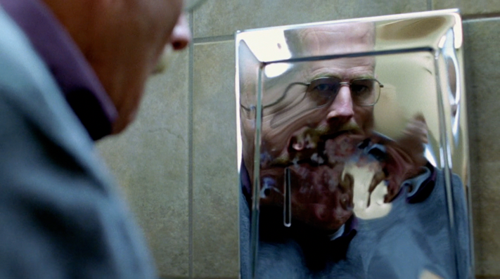
Extreme Close-up
Focuses on a minute object or part of the body, popular example is an eye.
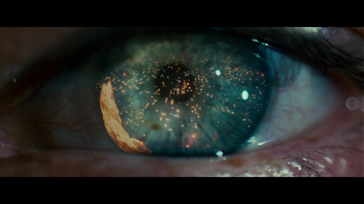
Medium
A shot of a character from the (approximate) waist up. Makes up 80-90% of movie shots.
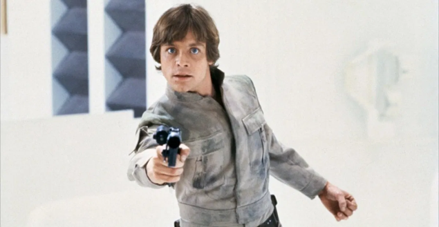
Long/Wide Shot
Shows the full body of a character, typically in relation to their surroundings.

Extreme Long Shot
Can either be used to establish the setting, or in the case of this shot in Endgame it is used to show the grandeur scale of the battle, and to highlight how small, not only Captain America is, but also how small Thanos is compared to the battlefield. Also it shows the contrast between Cap and Thanos’ HUGE army. This intensifies the battle between Cap and Thanos.
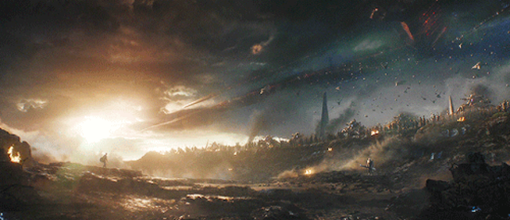
Bird's Eye View
The shot is taken directly above the character/objects in the frame.
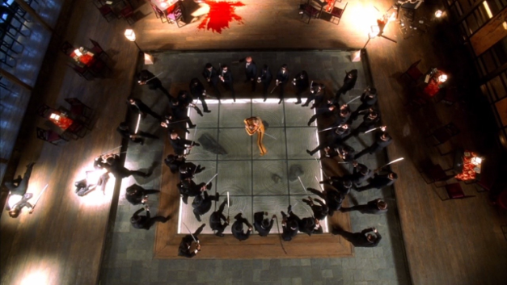
Deep Focus
Every element in the background and foreground remains in focus.
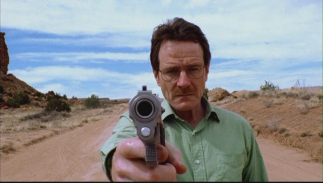
Shallow Focus
One element of the composition is is sharp focus while everything else is blurred (out of focus).
For example: In the shot below, the characters eyes are in focus to exemplify his emotions, but the gun and his hand are not. This points the viewer away from the act and directs them towards the characters state of mind while doing the act.
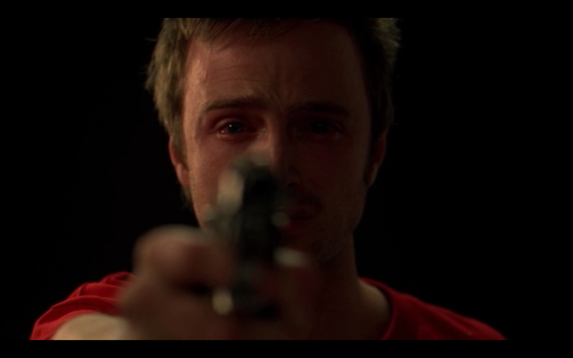
The following video reviews many of these cinematography shots:
Camera Angle
The camera angle refers to the position of the camera with respect to what is being viewed (the subject).
Types of Camera Angles
High Angle: the camera is above the subject. This angle can make the subject look smaller or powerless.
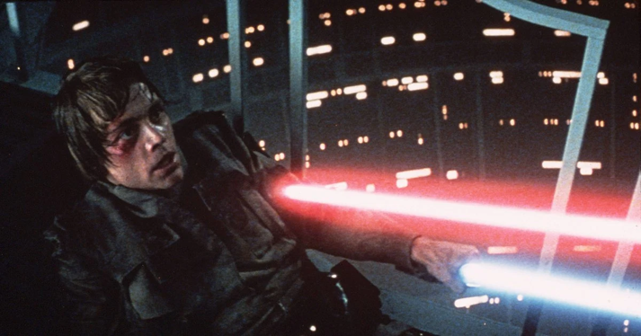
Low Angle: the camera is below the subject(s). This angle can make the subject look strong and powerful.
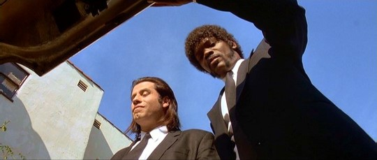
Straight On/Flat Angle: the camera is at an eye level view with the character. Used to make the viewer relate to the character in the frame, and (or) feel as though we are there with them. It is the angle that is most comfortable for viewers, as it mirrors how we typically look at the world.
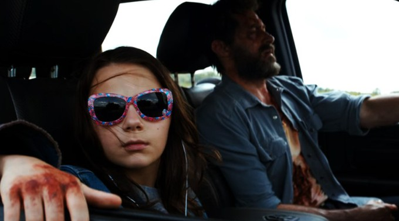
Canted Angle: Also known as the Dutch Angle, this shot is tilted. This can accomplish multiple things. It can show the world you’re viewing to be unstable, it can allude to something bad that is about to ensue, or it can simply make the audience feel uneasy, as if something is 'not quite right.'
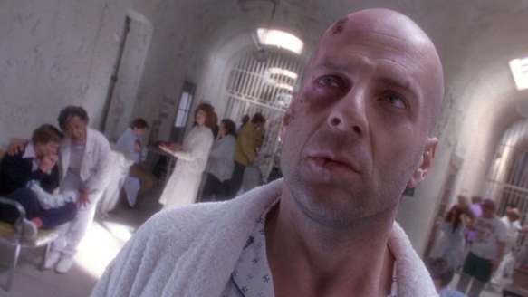
Angle of Destiny: A shot from above (often where a ceiling would be) looking at a character who is about to make a very important decision.
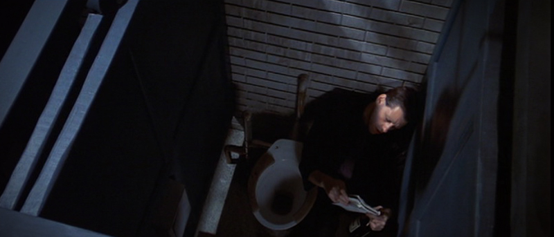
Camera Movement
"First and foremost, a film is visual rather than verbal. Thus, the feelings and ideas communicated by words must be changed to feelings and ideas communicated by visual symbols."
- Dr. F. Marcus, How Does a Movie Mean?
Whether considering documentaries or other films, there are two fundamental rules of filmmaking. The first is LET THE CAMERA DO THE TALKING. If possible, let the camera show the audience what they need to know; don't use words unless it's necessary.
A skilled movie director composes each shot using basic photographic techniques...a film is more than simply a series of still pictures, however. Another fundamental rule of filmmaking is THE MOVIE MUST MOVE.
In any film, there are two categories of movement:
- movement created by actors or objects in the film.
- movement created by the camera as it films a scene and as the film moves from scene to scene.
The following video reviews some of the basic types of camera movement.
this link opens in a new window/tab)
Pan: a stationary camera moves from side to side on a horizontal axis
Tilt: a stationary camera moves up or down along a vertical axis
Zoom: a stationary camera where the lens moves to make an object seems to move closer or further away from the camera. With this technique, moving into a character is often a personal or revealing movement, while moving away distances or separates the audience from the character.

Dolly/Tracking: the camera is on a track that allows it to move with the action. The term also refers to any camera mounted o a car, truck, or helicopter.
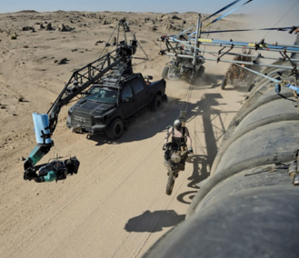
Zolly (Dolly Zoom): the camera zooms in on the subject while the track moves back. This creates a dizzying effect.
Boom/Crane: the camera is on a crane over the action. This is used to create overhead shots. The camera tilts up or down.

Above image shows the use of Dolly/Tracking and Boom/Crane to shoot "Transformers"
Blocking: How the actor is positioned in relation to the camera and their surroundings.
Characters and Actors
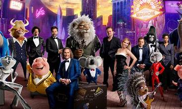
In a film, the characters and actors all play a very important role.

Dialogue: words spoken by the actors
Body Language: nonverbal cues (facial expressions, eye contact, posture)
Interaction: how the characters work together or conflict with one another
Wardrobe: what characters wear; carefully chosen to reveal more about the character

The following movie shots will provide examples of how you can analyze them using the techniques that you have recently learned.
Movie Shot 1
A married couple who are going through a divorce board a subway together after having a very heated counselling session. The wife is on the left with a leather jacket and red short hair. The husband is on the right with a suit and long black hair.

Analysis:
FLAT ANGLE
Puts the viewer there with the characters. We can level with them, for we are viewing them as if we are there on the subway with them.
POINT OF FOCUS
The point of focus is on the center of the frame, where the handrail is. This focuses the viewer on the barrier between the two main characters.
COMPOSITION
The placement of the handrail in the center of the frame separates the two main characters. This symbolizes their emotional disconnect and lack of intimacy.
Movie Shot 2
The male character went to the female character’s apartment and told her that he had been dumped, and she said she had as well. They have both struggled with finding their identity and discovering who they are throughout the film, and they decide to go to the roof to watch the sunset and find some peace.

Analysis:
FLAT ANGLE
It makes the viewer feel as though they are there with the two characters at the moment, and in the context of this scene, to allow the viewer to sympathize with the two characters.
COMPOSITION
The composition of this shot is rather simple, but purposeful. In the background, you have the city and the sunset, and in the foreground, you have the top of the building that the two characters are sitting on. And right in between the foreground and the background we have our two characters. This helps to establish the point of focus. The composition in this shot is meant to achieve two things, show the characters in the vast beauty and size of their surroundings, and at the same time show them in a way that is intimate, and separate from their surroundings. They are their own beings, but also are part of a whole, an example of visual juxtaposition.
LONG SHOT
Again, to make the viewer feel as though they are there with the two characters at the moment, and in the context of this scene, to allow the viewer to sympathize with the two characters (Extreme Long Shot). This allows you to see the beauty that the two characters are seeing: the city lights, and the sunset. It also shows how small the characters are in comparison to their surroundings. In this shot this is not used to diminish or show the characters in a spot of insignificance, but rather to humble them, and show them as part of a whole, a part of a huge beautiful city.
Movie Shot 3
This movie takes place in World War II. (Note: THE MOVIE IS COMPLETELY FICTIONAL). The woman in the frame is being filmed, the film is a message to the Third Reich. It is going to be played at one of their film festivals in which she will light the movie theatre on fire. The woman is Jewish and is attempting to get rid of the Nazi Party. The video she is filming is a message to the men in the Third Reich; she is taunting them in the video.

Analysis:
MEDIUM SHOT
The character is shot from the waist up, making this a medium shot. This serves a purpose more practically than as an artistic choice, and makes the desired composition and focal point easier to obtain, and easier to perfect.
COMPOSITION
Another simple but purposeful composition, the two wooden rails act as leading lines guide the viewer to look at the character, forcing the viewer to stand below, gazing at the powerful character. These leading lines also create the point of focus.
LOW ANGLE
The shot is taken from below the character, showing her in a position of power, staring down at the viewer. This establishes her as a threat, as someone not to be messed with.
POINT OF FOCUS
As said previously, the two wooden rails are leading lines leading the focal point onto the character. In this shot, the focal point is the center of the frame, also establishing the character as one of great significance.
When you analyze a movie shot, remember to:
- Identify the type of shot and angle(s) used
- Jot down any terms that apply to the shot
- Don't just state the terms - Try your best to explain each term's purpose
- Consider: What did the director hope to achieve by using these shots and angles?
- utilize PACES but remember to include the techniques introduced in this unit that are specific to movie shots
For this part of the unit you will watch one of the following movies:
"Lion" or "Pay it Forward"
Before beginning make sure you have gone through the lessons to gain some much needed background information about film structure and techniques. This will help you study the film you choose to watch in an analytic way.

Conclusion
You have now finished the lesson content for Unit 6.
Next Steps
When you have completed the assignment, please submit it to your teacher. You have now completed all units in the course and can now begin to prepare for the Common Exams.